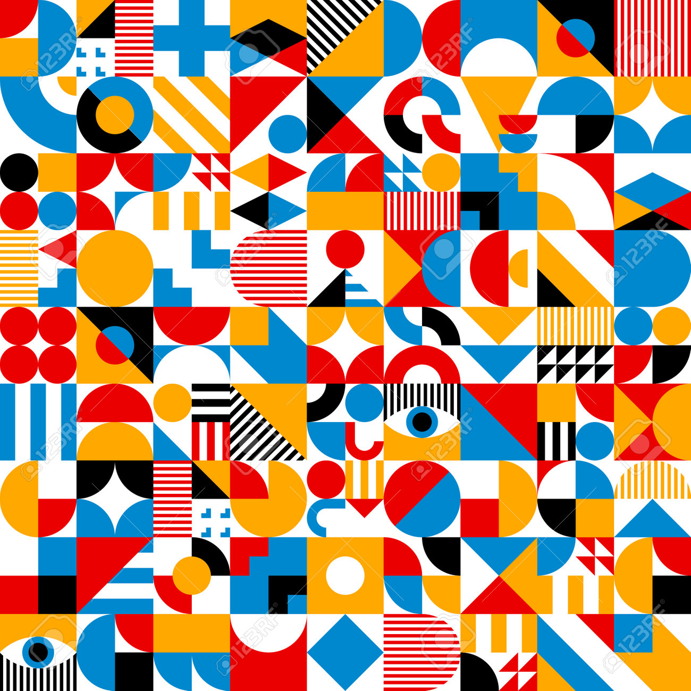
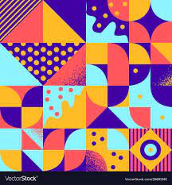
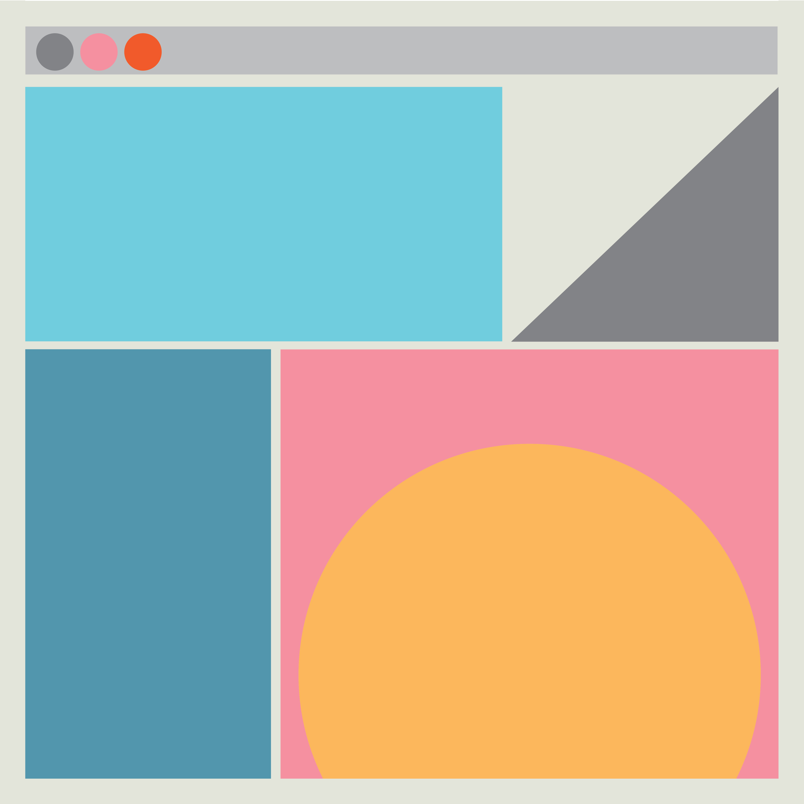
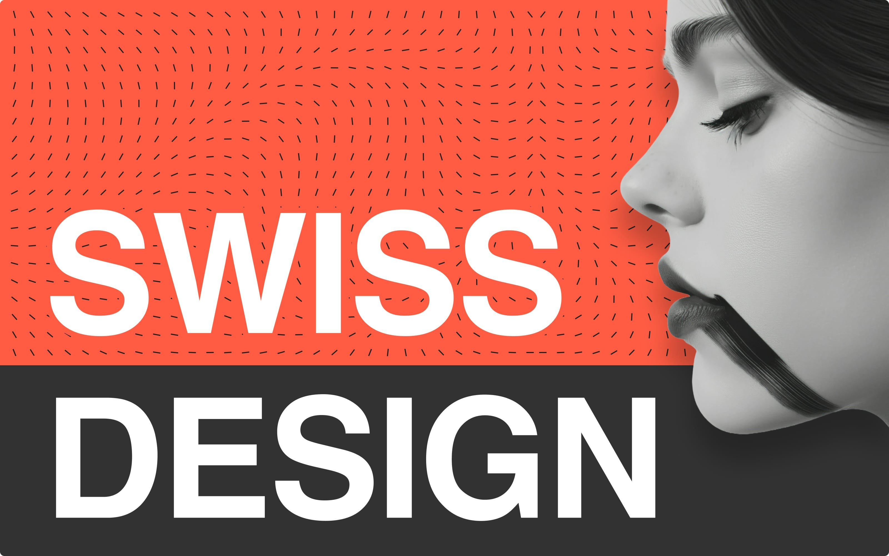

The gallery below features 6 examples of the International Typographic Style, demonstrating the use of grid systems, sans-serif typography, and objective communication.

Designer: Name of Designer — Year: 1954 — Source: Real source link/text

Designer: Name of Designer — Year: 1960 — Source: Real source link/text

Designer: Name of Designer — Year: 1963 — Source: Real source link/text
Designer: Name of Designer — Year: 1965 — Source: Real source link/text
Designer: Name of Designer — Year: 1970 — Source: Real source link/text

Designer: Name of Designer — Year: 1975 — Source: Real source link/text